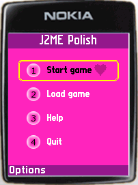

Overview
What is J2ME Polish?
J2ME Polish is suite of tools for creating "polished" J2ME applications.
Each tool meets a definite need
of J2ME developers:
Build-tools with an integrated device-database,
a powerful GUI, a framework for building localized applications,
a game-engine, a logging framework and a collection of utilities.
 |
 | |
| These screenshots show the optional GUI of J2ME Polish in action. These pictures show the same application with different designs. Absolutely no changes were made in the source code of the application. Have a look at the screenshots-page for more examples and details. | ||
If you're new to J2ME Polish, you might want to take the tour first, or have a look at the features-page or getting acquainted with J2ME Polish in the tutorial.
Status
J2ME Polish is a stable & complete solution for Windows, Linux and Mac OS X. With over 100 downloads per day, J2ME Polish is rapidly becoming the de-facto standard for developing J2ME applications. Please download the latest version (J2ME Polish <%= PolishVersion %>).
Open Source
J2ME Polish is available under the Open Source license GPL as well as under commercial licenses.
| J2ME Polish is OSI Certified Open Source Software. OSI Certified is a certification mark of the Open Source Initiative. | J2ME Polish is hosted on berliOS. | J2ME Polish is linked on java.net. | ||

|
|
|
<%include end.txt %>